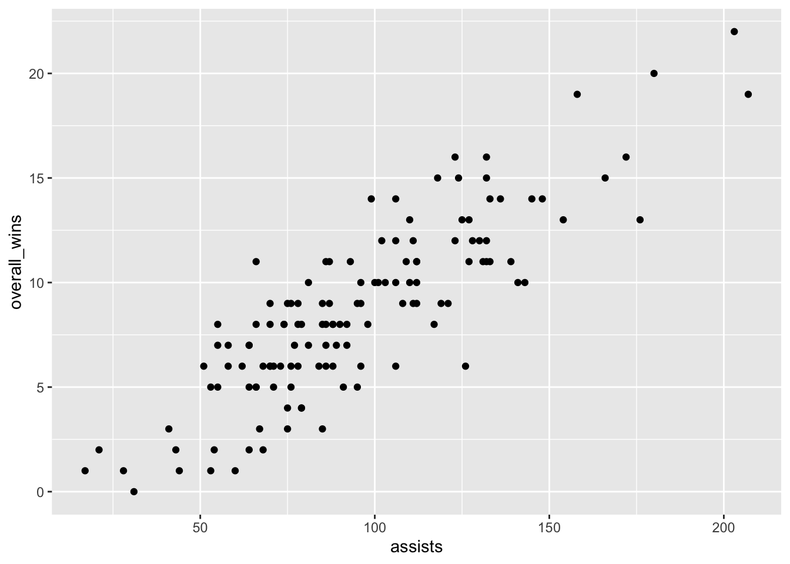
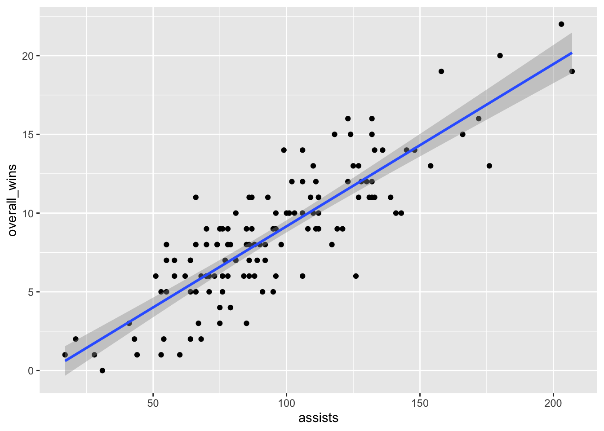
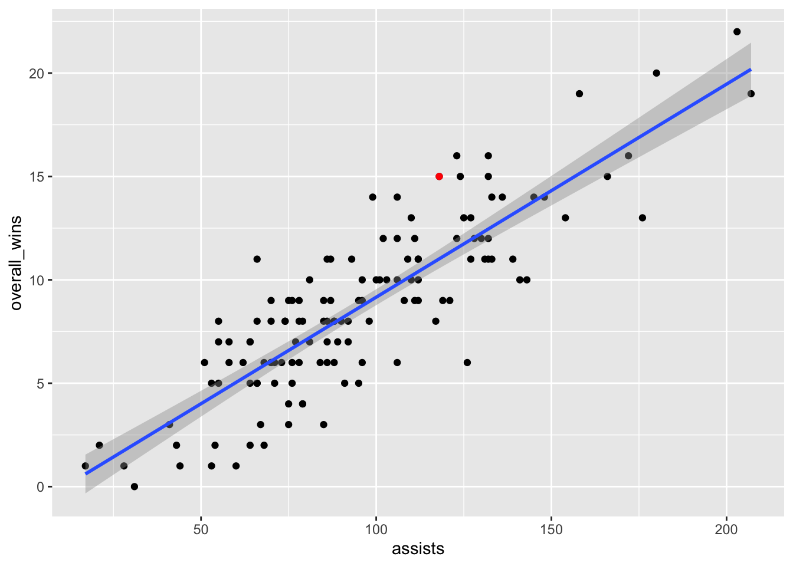
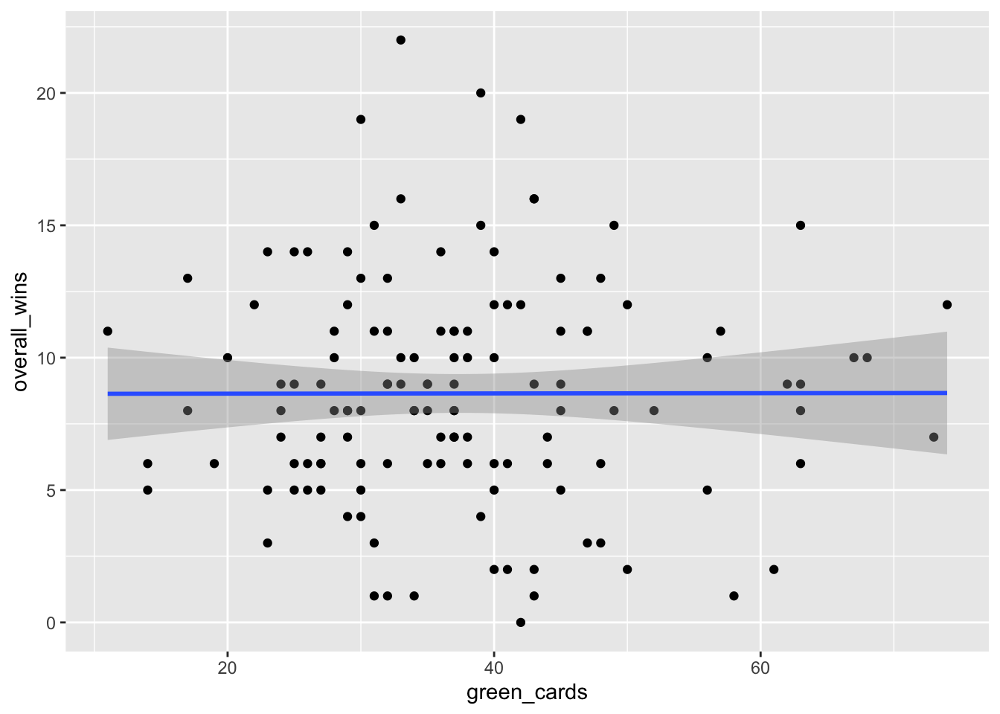

library(tidyverse)22 Scatterplots
With the exception of those curmudgeons who love defense, everybody loves scoring. We enjoy blowout games (when our teams win) and bemoan low-scoring affairs. But does how you score matter? Does it make a difference if you rely on a single star to go one-on-one versus if you move the ball around? While scoring is a necessary condition for winning, it’s not the only one. Plenty of bad teams score a lot - they just happen to give up more runs or points or goals.
So how do we tell if good passing makes a difference? How can we test the ingredients of success and determine what’s a significant factor and what’s a hot take?
This is what we’re going to start to answer today. And we’ll do it with scatterplots and regressions. Scatterplots are very good at showing relationships between two numbers.
To demonstrate this, we’ll look at women’s college lacrosse from the 2025 season, and we’ll see how assists and wins are related.
First, we need libraries and every college lacrosse game from the last season. What we’re interested in is less about a specific team and more about a general point: Are these numbers related and by how much? What can they tell you about your team in general?
For this walkthrough:
Load the tidyverse.
And the data.
teams <- read_csv("data/wlax_team_stats_2025.csv")Rows: 131 Columns: 37
── Column specification ────────────────────────────────────────────────────────
Delimiter: ","
chr (5): school_name, conference_name, ncaa_division_formatted, sport_id, g...
dbl (32): fouls, goals, assists, points, shots, shots_on_goal, ground_balls,...
ℹ Use `spec()` to retrieve the full column specification for this data.
ℹ Specify the column types or set `show_col_types = FALSE` to quiet this message.We’ve got columns for overall_wins and assists. Now let’s look at the scatterplot. With a scatterplot, we put what predicts the thing on the X axis, and the thing being predicted on the Y axis. In this case, X is our assists, y is our wins.
ggplot() + geom_point(data=teams, aes(x=assists, y=overall_wins))
Let’s talk about this. Ok, there’s really a clear pattern here - as assists increase, so do wins, generally. But can we get a better sense of this? Yes, by adding another geom – geom_smooth. It’s identical to our geom_point, but we add a method to the end, which in this case we’re using the linear method or lm.
ggplot() +
geom_point(data=teams, aes(x=assists, y=overall_wins)) +
geom_smooth(data=teams, aes(x=assists, y=overall_wins), method="lm")`geom_smooth()` using formula = 'y ~ x'
A line climbing from left to right is good. It means there’s a solid positive relationship here. The numbers don’t suggest anything. Still, it’s worth asking: can we know exactly how strong of a relationship is this? How much can assists scored explain wins? Can we put some numbers to this?
Of course we can. We can apply a linear model to this – remember Chapter 9? We’re going to create an object called fit, and then we’re going to put into that object a linear model – lm – and the way to read this is “wins are predicted by opponent threes”. Then we just want the summary of that model.
fit <- lm(overall_wins ~ assists, data = teams)
summary(fit)
Call:
lm(formula = overall_wins ~ assists, data = teams)
Residuals:
Min 1Q Median 3Q Max
-5.8395 -1.3759 -0.0456 1.4786 5.3421
Coefficients:
Estimate Std. Error t value Pr(>|t|)
(Intercept) -1.141803 0.561467 -2.034 0.044 *
assists 0.103026 0.005547 18.573 <2e-16 ***
---
Signif. codes: 0 '***' 0.001 '**' 0.01 '*' 0.05 '.' 0.1 ' ' 1
Residual standard error: 2.212 on 129 degrees of freedom
Multiple R-squared: 0.7278, Adjusted R-squared: 0.7257
F-statistic: 345 on 1 and 129 DF, p-value: < 2.2e-16Remember from Chapter 9: There’s just a few things you really need.
The first thing: R-squared. In this case, the Adjusted R-squared value is 0.7257, which we can interpret as the number of assists a team records predicts about 72 percent of the variance in wins. Pretty good!
Second: The P-value. We want anything less than .05. If it’s above .05, the difference between them is not statistically significant – it’s probably explained by random chance. In our case, we have 0.00000000000000022, so this isn’t random chance. Which makes sense, because it’s harder to win when you don’t score.
Normally, we’d stop here, but let’s look at the third element: The coefficient. In this case, the coefficient for assists is 0.103026. What this model predicts, given that and the intercept of -1.141803, is this: For every assist you tally, you add about .10 towards your wins total. So if you have 50 assists in a season, you’ll be a 5-win team. Notch 150, you’re closer to a 15-win team, and so on. How am I doing that? Remember your algebra and y = mx + b. In this case, y is the wins, m is the coefficient, x is the number of goals and b is the intercept.
Let’s use Maryland as an example. They recorded 118 assists last season.
y = 0.103026 * 118 + -1.141803 or 11 wins
How many wins did Maryland have? 15.
What does that mean? It means that Maryland over-performed, according to this model. Seems like assists is an ok predictor for Maryland, but maybe not a great one. Perhaps the Terps relied on one-on-one scoring opportunities instead of passing. Where is Maryland on the plot? We know we can use layering for that.
umd <- teams |> filter(school_name == "Maryland")ggplot() +
geom_point(data=teams, aes(x=assists, y=overall_wins)) +
geom_smooth(data=teams, aes(x=assists, y=overall_wins), method="lm") +
geom_point(data=umd, aes(x=assists, y=overall_wins), color="red")`geom_smooth()` using formula = 'y ~ x'
Maryland’s not the most interesting team on this plot, though. Who is?
22.1 Let’s see it fail
Scatterplots also are useful for shooting down the hottest of takes. What about green cards? Are they related to wins in lacrosse?
ggplot() +
geom_point(data=teams, aes(x=green_cards, y=overall_wins)) +
geom_smooth(data=teams, aes(x=green_cards, y=overall_wins), method="lm")`geom_smooth()` using formula = 'y ~ x'
This is basically a flat line and a lot of dots spread all over the plot. There appears to be absolutely no relationship, but let’s test that out just to be sure.
Let’s get our linear regression stats.
gcfit <- lm(overall_wins ~ green_cards, data = teams)
summary(gcfit)
Call:
lm(formula = overall_wins ~ green_cards, data = teams)
Residuals:
Min 1Q Median 3Q Max
-8.6510 -2.6487 -0.6428 2.3527 13.3531
Coefficients:
Estimate Std. Error t value Pr(>|t|)
(Intercept) 8.6319063 1.1930828 7.235 3.69e-11 ***
green_cards 0.0004536 0.0303506 0.015 0.988
---
Signif. codes: 0 '***' 0.001 '**' 0.01 '*' 0.05 '.' 0.1 ' ' 1
Residual standard error: 4.241 on 129 degrees of freedom
Multiple R-squared: 1.731e-06, Adjusted R-squared: -0.00775
F-statistic: 0.0002233 on 1 and 129 DF, p-value: 0.9881The p-value is way above 0.05, so the impact of green cards to wins (or losses) could just be random. The adjusted R-squared is all of -0.00775 percent. We’ve do not have something here. Let’s use our coefficients to look at Maryland’s 2024-25 season.
(0.0004536 * 31) + 8.6319063[1] 8.645968This model says that based only on Maryland’s green cards, they should have won 8, maybe 9 games. They won 15. Not a great model for many teams.
The power in combining scatterplots + regression is that we can answer two questions: is there a relationship, and how meaningful is it?